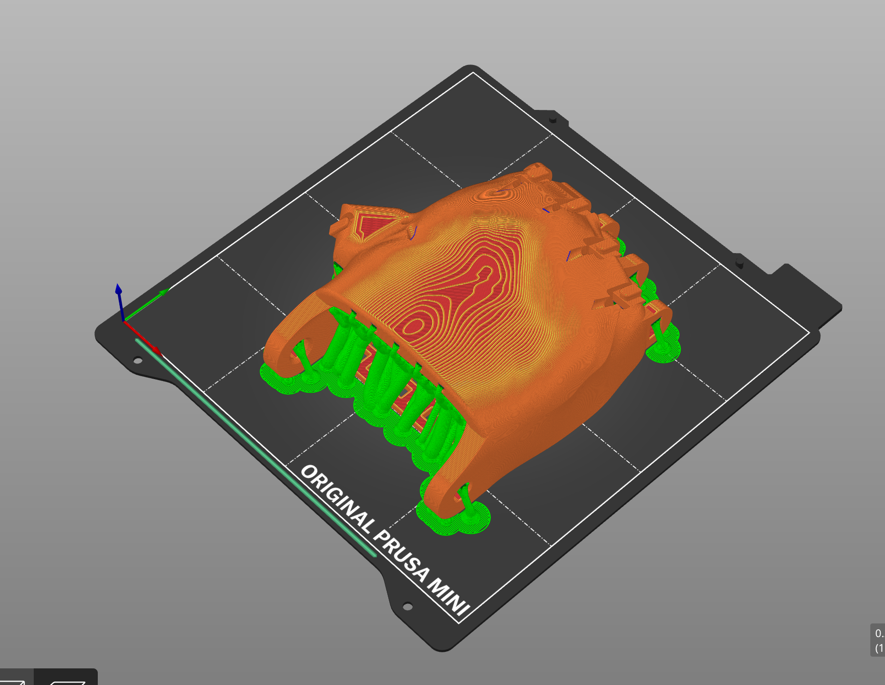
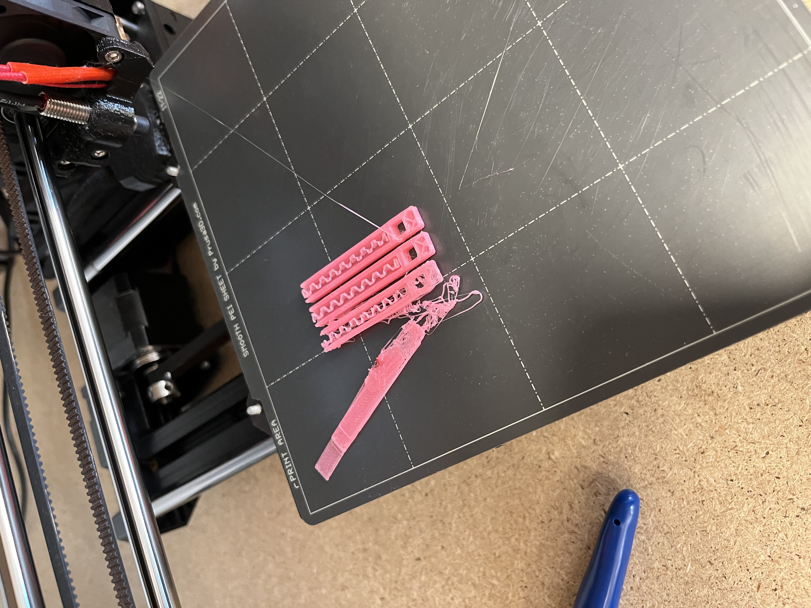
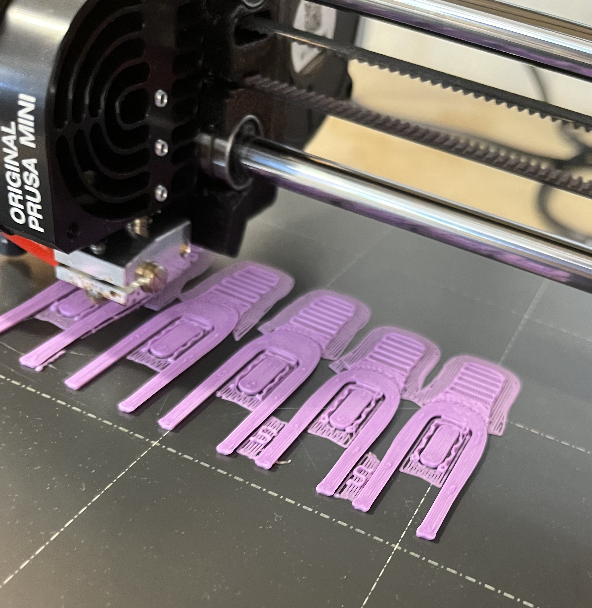
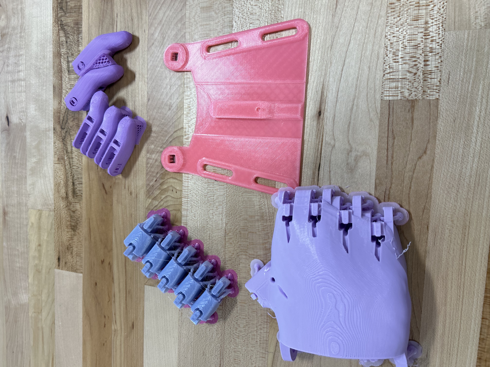
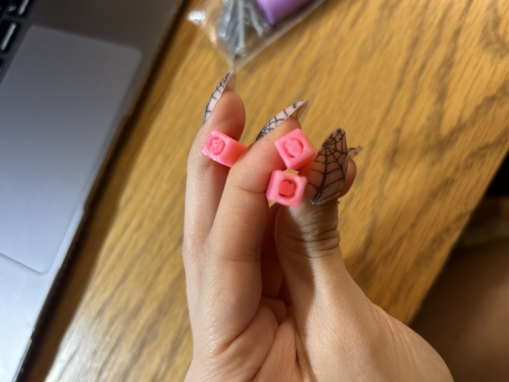
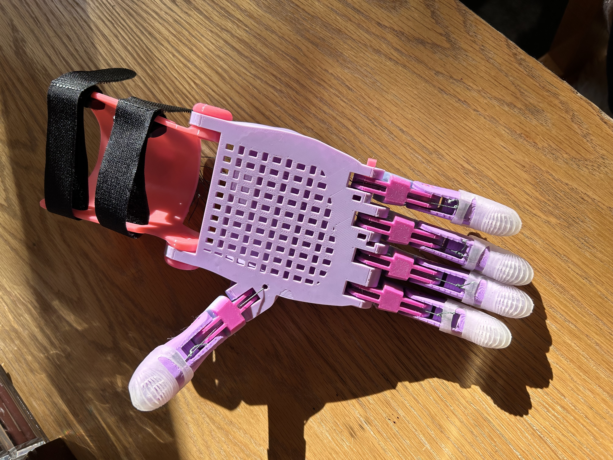
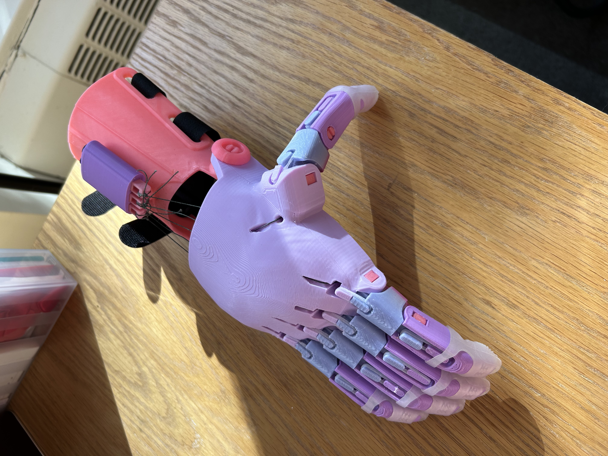
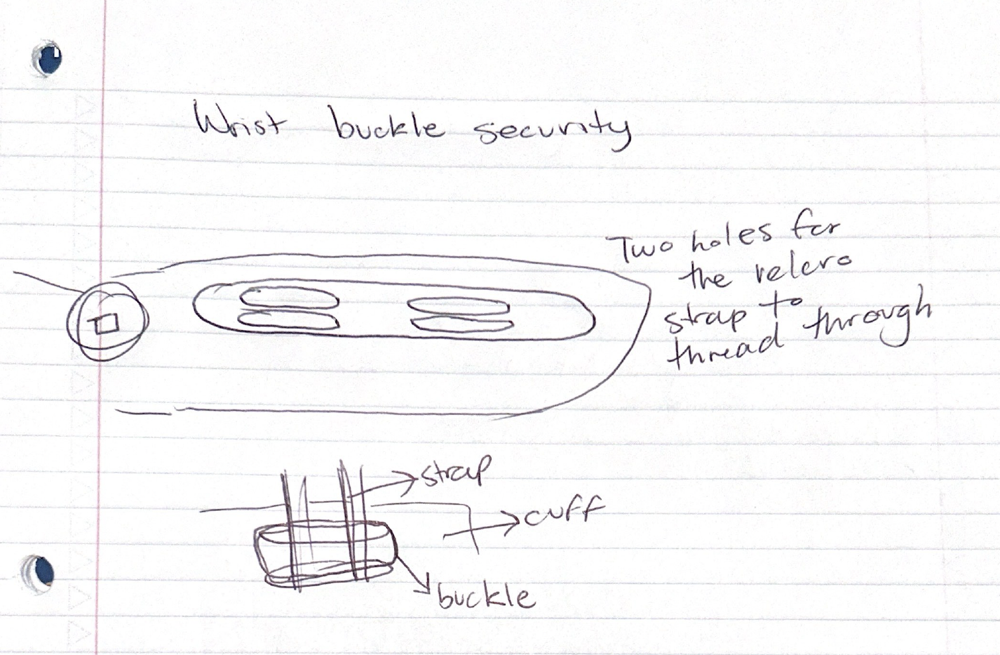

Project 4: Open-source assistive technology 10/25<
Part 2.1: Review documentation
WRITING
Part 2.2: Print & assemble the model 
PrusaSlicer
Print fail
Printing
Color palette

Broken arm band
Supports causing issues
Finished palm

Triple knotted
Finished hand
WRITING
Part 2.3: Extend, critique & reflect
Sketch
CAD design
WRITING